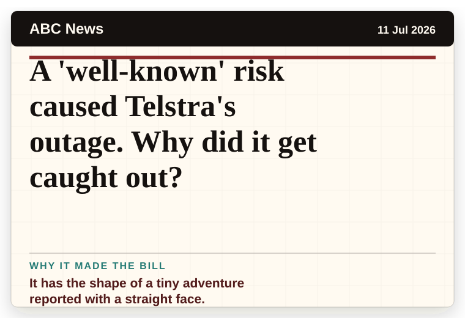
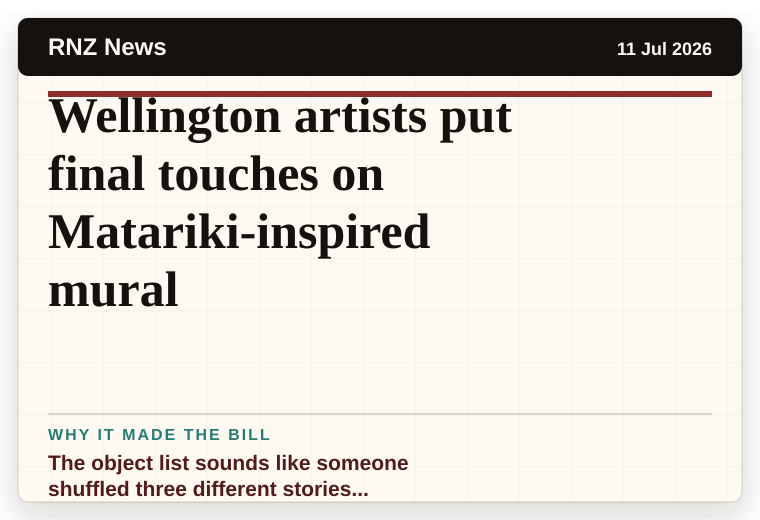
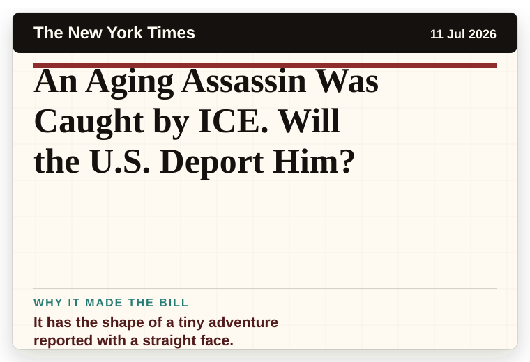
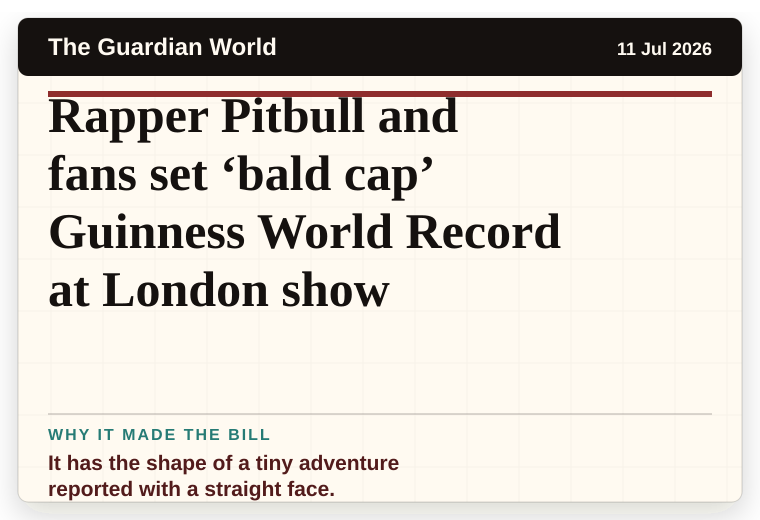
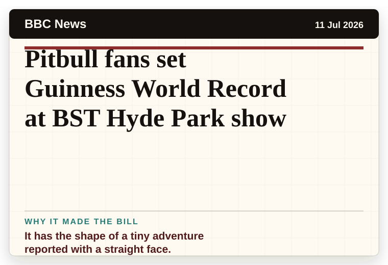
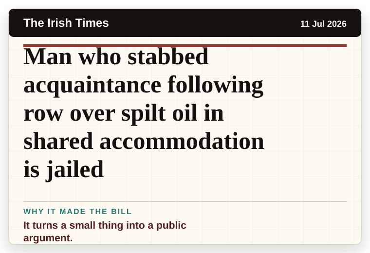
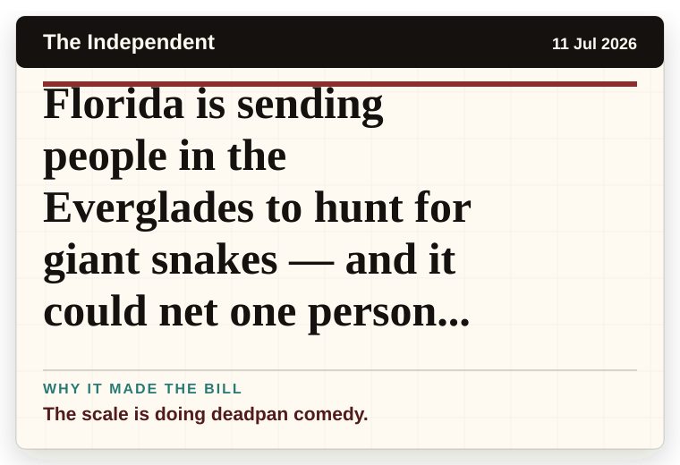

NT News
Australia
Nigel Farage could face Count Binface in bizarre UK election showdown
The headline is already trying not to laugh.
The latest daily picks, linked back to the original sources. Search the room, pick a source, or follow a headline out to the full story.
Record updated: 11 Jul 2026, 07:52 AM AEST
Showing 17 headline candidates from the refresh run completed on 11 Jul 2026, 07:52 AM AEST.
The headline is already trying not to laugh.

The scale is doing deadpan comedy.

It has the shape of a tiny adventure reported with a straight face.

A wonderfully specific detail has taken centre stage.

It has the shape of a tiny adventure reported with a straight face.

A very ordinary object has wandered into serious news.

A mystery is doing a lot of work in a very small sentence.

A mystery is doing a lot of work in a very small sentence.

The scale is doing deadpan comedy.

The word chaos gives it open-mic energy.

It has the shape of a tiny adventure reported with a straight face.

The object list sounds like someone shuffled three different stories together.

It has the shape of a tiny adventure reported with a straight face.

It has the shape of a tiny adventure reported with a straight face.

It has the shape of a tiny adventure reported with a straight face.

It turns a small thing into a public argument.

The scale is doing deadpan comedy.